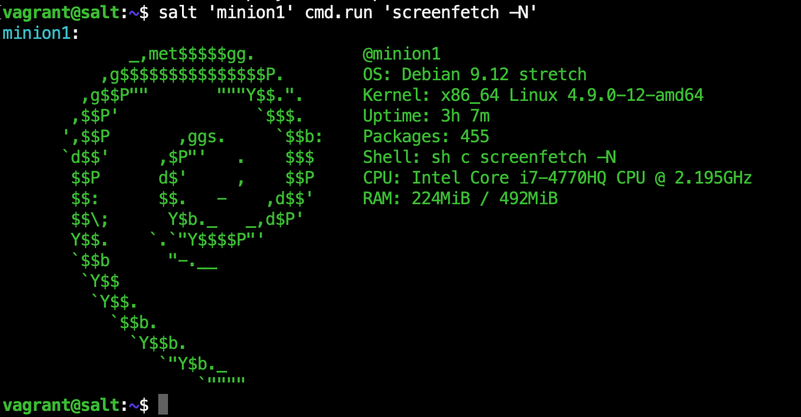
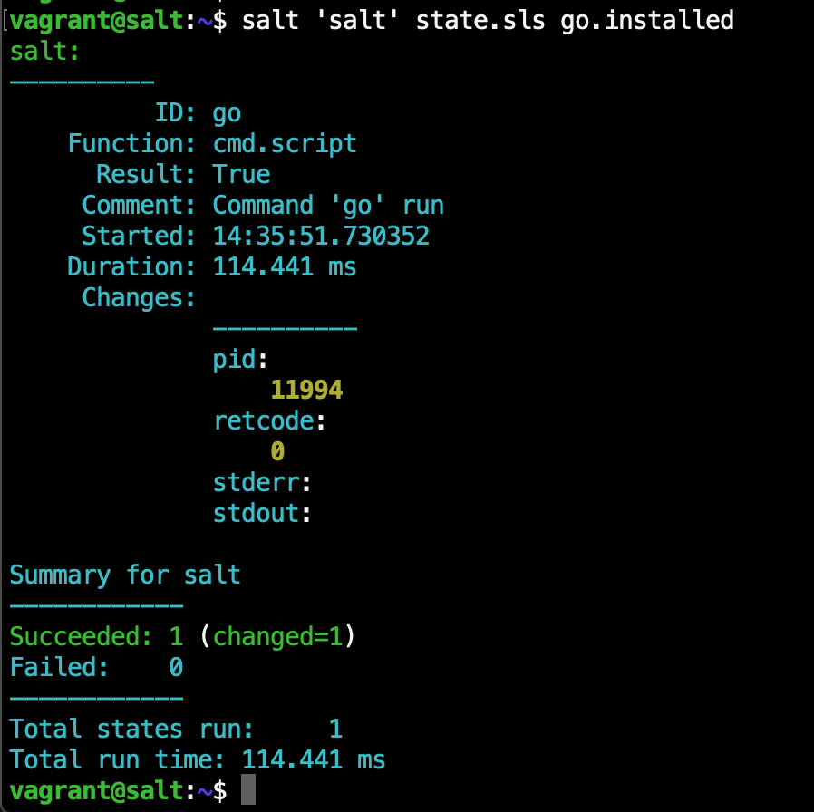

An intro to SaltStack
Software to automate [and document] the management and configuration of any infrastructure or application.
About Me
Nick Vissari
Security Guy & DevSecOps Enthusiast
Sysadmins have to configure systems
We spend hours upon hours reading the friendly manuals, watching youtube videos, reading quickstarts and tutorials.
Keeping track of things is hard
Which system is doing what.
Documentation to the rescue!
Word docs
Text files
Uber 1337 h4x0r shell scripts
Talking to yourself on slack
Bookmarks to stack overflow answers
Here's a list of effective methods of documenting.
Infrastructure as code!wikipedia.org/wiki/Infrastructure_as_code
We can write our infrastructure as code and store everything in git.
Saltstack is a client server technology that, by default, runs as root/SYSTEM on the client.
SaltStack enables us to deploy configurations to servers and document the configuration.
Install salt master
salt-talk/lab$ vagrant ssh master
$ sudo apt install curl
$ curl -L https://bootstrap.saltstack.com -o install_salt.sh
$ sudo sh install_salt.sh -P -M
Start up our three systems one master and two minions all three are debian/stretch.
Install salt minions
salt-talk/lab$ vagrant ssh minion1
$ sudo apt install curl
$ curl -L https://bootstrap.saltstack.com -o install_salt.sh
$ sudo sh install_salt.sh -P
There's some magic happening in the background, the hostname "salt" resolves to the master.
Accept the keys
The minions will accept the master's key by default. If you recreate the master without the a backup of the master's key, the clients won't talk to the master anymore and you'll have to redeploy.
Test connectivity
Run commands using cmd.run
Commands executed like this in saltstack happen in parallel.
Errors are fun
And you'll be warned about minions that error.
Grains
Saltstack collects grains, bits of information about a host
You can get grains one at a time.
You can set grains and use them later. Grains are great for describing system roles or describing a system's makeup
Targeting minions
'server*' = server1 server2 server3 server-fred
'server?' = server1 server2 server3
'server[1,3]' = server1 server3
'server[1-3]' = server1 server2 server3
-L 'server1,server2'
-G 'role:worker' = whoever has the grain role=worker
-S '192.168.0.0/16' = whoever is in the subnet
Without any switches, the default targeting uses shell style globbing.
Compound matchers
-C 'G@role:worker and
You can combine as many as you like in a compound matcher with boolean logic that supports parenthesis.
A state is two things in one, first a check to ensure the system has whatever you want it to have, second is whatever is required to take the system from it's current state to the state you want it to be in.
S aL t S tate file
xyz:
pkg.installed
xyz:
cmd.script:
- source: salt://xyz-installed.sh
Here we have two different state files that demonstrate the same thing.
Keep track of what you do
cd /srv
git config --global user.name "John Doe"
git config --global user.email johndoe@example.com
git init
This isn't a talk on how to use git. We are just going to use what we need and if we screw it up, that's ok.
/srv/salt/screenfetch/installed.sls
screenfetch:
pkg.installed
For our first state file we'll do something simple. We'll use the OSes builtin package manager to deploy screenfetch.
Test it
Now we can test our state file be deploying it to one minion.

It works, commit it!
Now we can describe where this state gets deployed.
/srv/salt/top.sls
base:
'minion?':
- screenfetch.installed
The top.sls file is a special significance. You can think of it like main. All minions will look to the top.sls file when applying state. In salt world they call this the highstate.
Now we deploy using state.apply to set however many minions we want to set their highstate.
Notice one of the minions failed hard. The reason there is that we called the state.apply and that minion doesn't have any states to apply.
/srv/salt/go/installed.sh
#!/bin/bash
# Download and extract go
if [ ! -f "/usr/local/go/bin/go" ]
then
cd /root
wget -q https://dl.google.com/go/go1.14.linux-amd64.tar.gz
tar -C /usr/local -xzf /root/go1.14.linux-amd64.tar.gz
rm /root/go1.14.linux-amd64.tar.gz
fi
# Add go bin path to global profile
if ! grep /usr/local/go/bin /etc/profile >/dev/null
then
echo export PATH=\$PATH:/usr/local/go/bin >> /etc/profile
fi
Here's another more complicated example. Installing the latest version of go. The version in package manager
differs from the latest version. Notice this script is separated into two parts. The first part downloads and
extracts go. The second adds the go bin path to the profile. If we were to run this script twice what would
happen the second time?
/srv/salt/go/installed.sls
go:
cmd.script:
- source: salt://go/installed.sh
Now we create a state file that will execute the script from the salt file server.

Here's what it looks like when we run this state a second time. Notice the state is "changed" but we know
nothing happened.
/srv/salt/top.sls
base:
'minion?':
- screenfetch.installed
'salt':
- go.installed
Now we update our top file to describe where go will be installed.
pillars
target with pillars I@
Pillars are tree-like structures of data defined on the Salt Master and passed through to minions.
extra bits
you can run salt clientless with salt-ssh